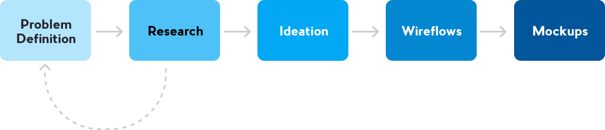
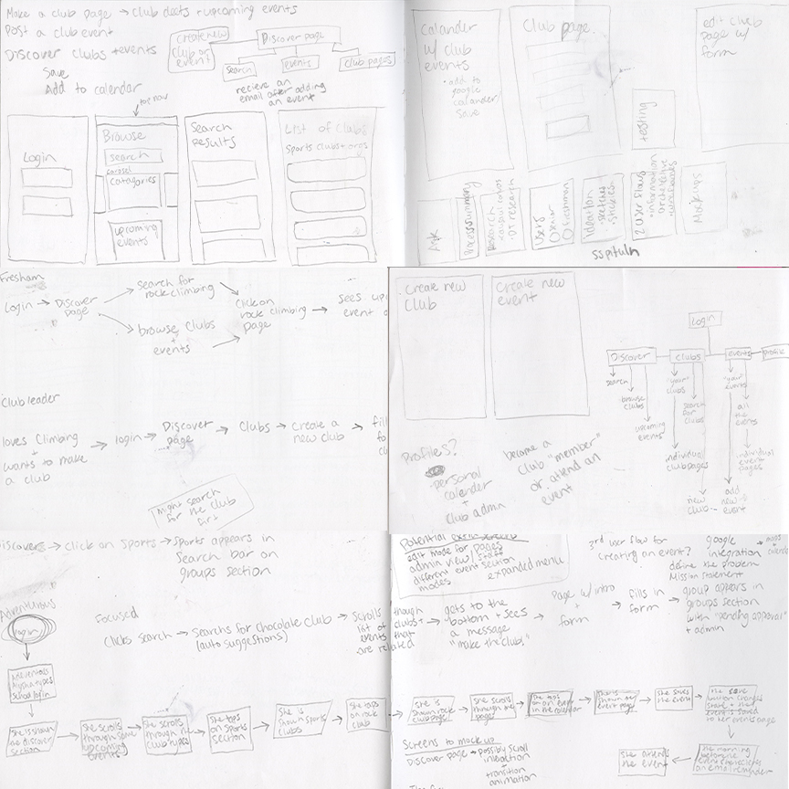
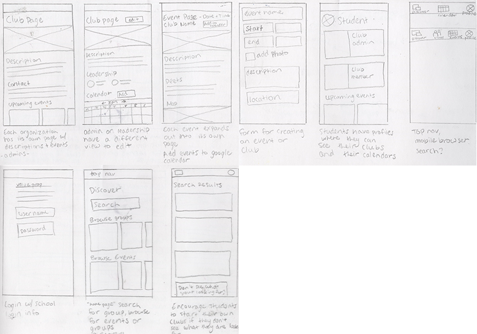
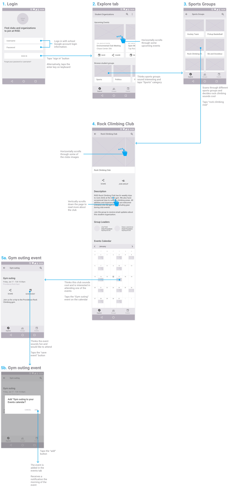
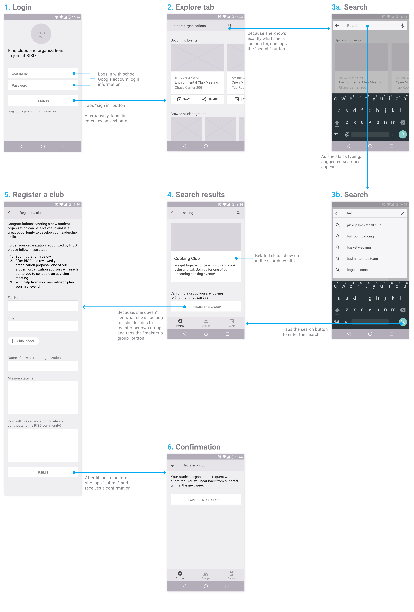
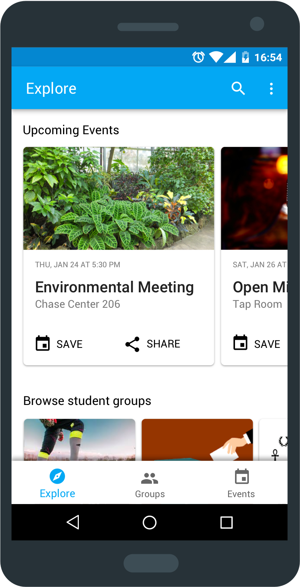

The Ask
Prompt #1: Design an experience for new students to browse, search, and propose new student organizations. Provide your overall process, a wireframe flow, and one to two screens at higher fidelity.
Process Summary:
Research
Who are the users? What do they need?
I had a few casual conversations with my classmates to better understand their mindsets when joining student organizations as Freshman.
Key Insights:
- Some students already knew what clubs they wanted to join before they got to campus while others discovered clubs during or after orientation.
- Some students didn’t even know that they could propose new student organizations when they first got to campus.
How is this problem already being solved?
Students at my school find student organizations through OrgSync (a platform specifically for student organizations), word of mouth and through Facebook events that organizations post.
Limitations:
- OrgSync is difficult to navigate. Due to its many usability issues, most clubs do not post their club events.
- Facebook has groups and events for many different organizations, it’s not just limited to universities. It's hard to discover organizations that are only for students.
Opportunity Definition
Problem Statement: Students lack a user friendly platform to search for student organizations that they are interested in, discover new organizations that they don’t know about yet and be encouraged to propose new organizations.
Goals:
- Make the navigation efficient
- Help students find organizations that they already know they want to join
- Help students find organizations that they might not know about yet
- Encourage students to propose new organizations
Personas
Some students know exactly what they want, while others are just browsing.

Adventurous Anya:
- Freshman at RISD
- Just finished orientation
- Excited to begin new life as a college student
- Interested in meeting new people and trying new things

Focused Fay:
- Freshman at RISD
- Just finished orientation
- Loves baking
- Sad because her dorm room does not have an oven or space for baking
- Looking to meet other people who are also interested in baking
Ideation
What features should this experience have? How should they be organized?
Brainstorming: I started by writing down some of the features that I thought the experience should have and how I thought they should be organized based on my research.
Sketching: Then I drew some initial wireframes. I prefer to always design for a mobile experience first and then create the desktop experience based on the mobile experience.
User Flows
Search vs Discovery
Discovery: Adventurous Anya is looking to try new things. She uses the explore tab to browse through upcoming events, and clubs until she finds one that sounds interesting to her.
Search: Focused Fay knows exactly what she is looking for. She searches for a club using the search function, and when she doesn’t find it, she decides to register her own club.
Discovery: Adventurous Anya
Search: Focused Fay
Mockups

Images are a big part of this interface so that group leaders can communicate what their group is about visually. Images allow groups a small amount of customization for their pages.
I used material design guidelines and designed this app for Android.
Next Steps
The next steps for this project are to get feedback from other designers and from users. The app should also include a way for student leaders to edit pages and create new events. School staff should also have a slightly different interface so that they can approve groups and events. This app should also be designed as a web app in a browser for students who wish to view it on desktop.
Thanks for looking!